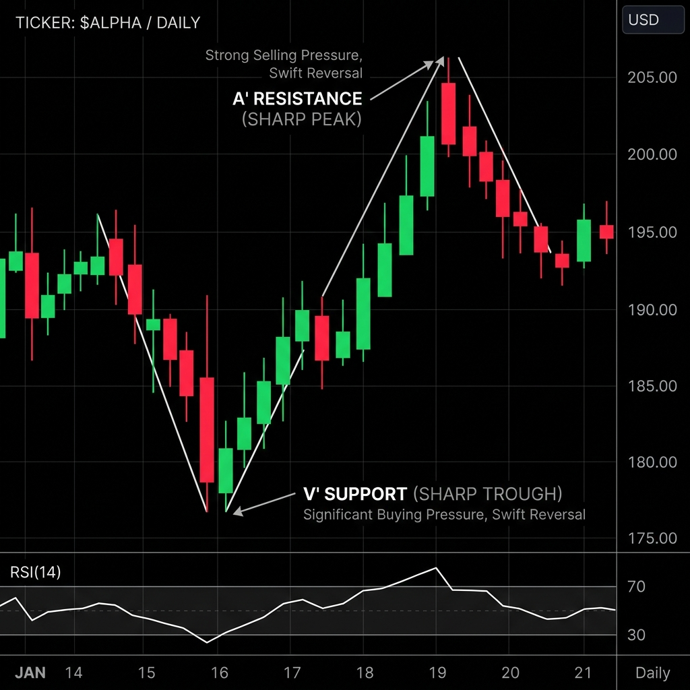
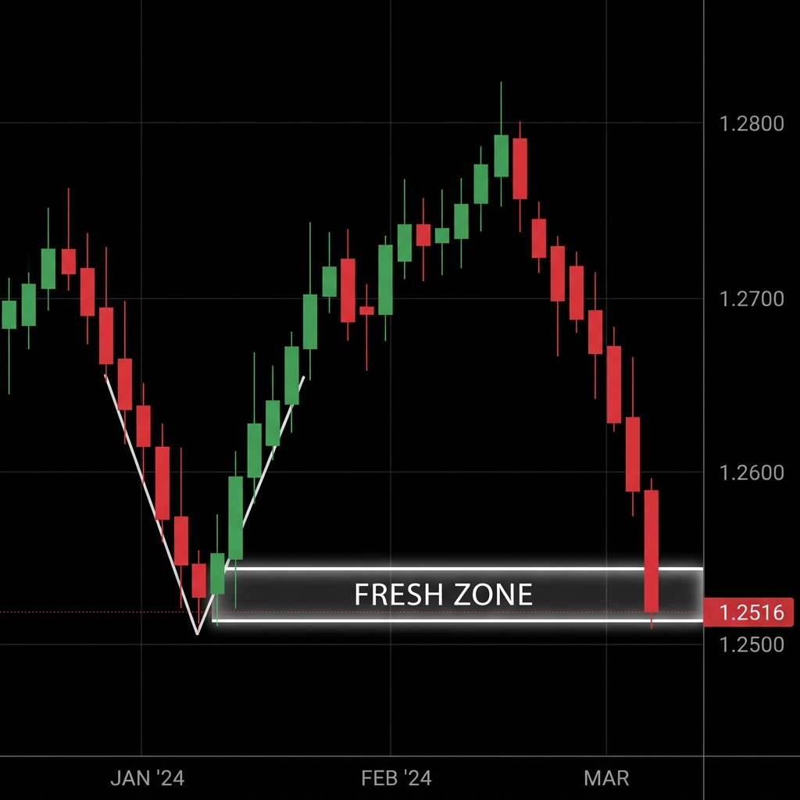

Piyasada bireysel (retail) yatırımcıların %90'ı destek ve direnç çizgilerini yatay olarak çizer, bölgeleri kutular içine alır ve fiyatın o bölgeye her gelişinde sekmesini umut ederler. Bu, Market Maker (Piyasa Yapıcı) algoritmalarının en sevdiği tuzaktır. MSNR (Malaysian Support and Resistance), fiyatın nerede duracağını tahmin etmeye çalışmaz; "Hikayenin" (Storyline) hangi yöne doğru aktığını okur. Trend çizgileri, indikatörler veya RSI aşırı alım/satım verileri MSNR'de tamamen geçersizdir.
Bölüm 1: Gerçek Destek ve Direncin Anatomisi
MSNR sisteminde destek ve dirençler, geçmişte yatayda ne kadar test edildiğine göre DEĞİL, oluşturdukları "momentum (hız)" ve "şekle" göre belirlenir. Piyasada iki temel harf formasyonu ararız: A ve V.

1.1 - "A" Formasyonu (Gerçek Direnç)
Fiyatın yukarı doğru güçlü bir şekilde çıkıp, aynı hızla ve keskin bir şekilde aşağı çakıldığı formasyonlardır. Şekil itibariyle sivri bir "Ters V" veya büyük bir "A" harfine benzer. Bu şeklin oluşması tesadüf değildir. O tepe noktasında devasa boyutta kurumsal bir satış (Sell Limit veya Market Sell) emri vardır. Bu keskin dönüş (Sharp Rejection), o noktanın gerçek bir direnç olduğunu kanıtlar. Kavisli, yavaş dönen tepeler MSNR'de dikkate alınmaz.
1.2 - "V" Formasyonu (Gerçek Destek)
Fiyatın sert bir şekilde düştüğü, ancak aniden devasa bir alım gücüyle (Smart Money Accumulation) karşılaşıp "V" şeklinde hızla yukarı fırladığı yerdir. Bu sivri dip noktası bizim MSNR desteğimizdir. Piyasada panik satışı varken Akıllı Para'nın tüm malları ucuzdan topladığı o "sıfır noktasıdır".
Bölüm 2: Kutsal Kural - "Fresh Zone" (Taze Bölge)
Youtube'daki klasik trading eğitimleri size şu yalanı söyler: "Bir destek çizgisi ne kadar çok test edilirse o kadar sağlamlaşır."
Bu tamamen yanlıştır ve kasanızı sıfırlamanıza neden olur. MSNR'de altın kural tam tersidir: Bir bölge (A veya V noktası) fiyat tarafından daha önce HİÇ TEST EDİLMEMİŞSE (Yani Fresh ise) en güçlü halindedir. Peki neden?

2.1 - Bekleyen Emirlerin (Unfilled Orders) Mantığı
Kurumsal bankalar ve hedge fonlar tek seferde 5 milyar dolarlık işlem açamazlar. Eğer açarlarsa fiyatı bir anda uzaya fırlatırlar ve kötü bir maliyetlenmeye sahip olurlar. Bu yüzden fiyatı bir yöne sertçe iterken, arkalarında devasa miktarda "Gerçekleşmemiş Emirler" (Unfilled Limit Orders) bırakırlar.
Fiyat o "A" (Direnç) noktasına İLK KEZ geri döndüğünde, o bekleyen emirler tetiklenir ve fiyat şiddetle aşağı itilir. Ancak fiyat aynı bölgeye 2. veya 3. kez geldiğinde, oradaki tüm kurumsal emirler (para) tükenmiş demektir. O direnç artık içi boş bir kabuktur ve bir sonraki seferde kırılarak geçilecektir.
Grafikte "Fresh" (Daha önce fiyatın sağ tarafında hiç temas edilmemiş) sivri bir A veya V noktası bulduğunuzda, fiyat oraya İLK KEZ geldiğinde doğrudan limit emriyle (Buy Limit / Sell Limit) işleme girebilirsiniz. Buna MSNR dilinde "High Probability Blind Spot Trade" denir. Sadece taze bölgeler bu agresifliği hak eder.
Bölüm 3: Storyline (Hikaye) ve Multi-Timeframe Analizi
Sadece 5 dakikalık veya 15 dakikalık grafiğe bakarak MSNR işlemi alınmaz. Çünkü 15 dakikalık grafikte gördüğünüz devasa bir "A" direnci, Aylık (Monthly) grafikte sadece ufak bir gürültüden ibaret olabilir. Pazarın bir "Hikayesi" vardır ve bu hikaye her zaman Büyük Zaman Diliminden (HTF) Küçük Zaman Dilimine (LTF) doğru emreder.
3.1 - Yön Tayini (Bias) Bulmak
Haftalık (Weekly) ve Günlük (Daily) grafiği açın. Kendinize şu soruyu sorun: "Fiyat şu anda yukarıdaki taze (Fresh) bir A noktasına (Direnç) mı gidiyor, yoksa aşağıdaki taze bir V noktasına (Destek) mı?"
Eğer Günlük grafikte fiyat yukarıdaki hedefine (A noktasına) gidiyorsa, ana hikayeniz "Boğa" (Bullish)'tir. Bu noktadan sonra short (satış) aramak intihardır.
3.2 - Hikayenin Önündeki Engeller
Yönümüzün yukarı olduğunu (Günlük grafikte) anladık. Şimdi 4 Saatlik (4H) grafiğe iniyoruz. Fiyat yukarıdaki hedefine giderken düz bir çizgi halinde gitmez, zikzaklar çizer. 4H grafikte fiyatın aşağı çekilebileceği, ancak oradan sekip yukarı devam edeceği "Taze V (Destek)" bölgelerini işaretliyoruz. Bizim asıl işlem alacağımız yerler buralardır.
3.3 - Kesin Onay (Confirmation Entry)
Fiyat 4H grafikteki Taze V bölgemize düştüğünde, körü körüne alım (Blind Entry) yapmak yerine 15 Dakikalık (15m) grafiğe inip onay bekleyebiliriz. Fiyat 15m grafikte o bölgenin içine girdiğinde, orada yeni bir "V" yapısı oluşturmalı veya ICT diliyle bir CHOCH (Karakter Değişimi) yapmalıdır. Bu bize "Evet, büyük zaman dilimindeki desteğe geldik ve küçük zaman diliminde alıcılar piyasaya girdi" mesajını verir.
Bölüm 4: MSNR Fail (Başarısızlık) Senaryoları
Piyasada %100 çalışan hiçbir strateji yoktur. Peki ya çok güvendiğiniz Günlük Taze A (Direnç) bölgesi sert bir mumla kırılarak geçilirse ne olur?
4.1 - Hikaye Değişimi (Shift in Storyline)
Bireysel traderlar bir direnç kırıldığında inatlaşır, "Buradan dönecek" diyerek sürekli zararına pozisyon eklerler. MSNR ustası ise bilir ki: Eğer önemli bir direnç kırılıyorsa, Hikaye (Storyline) değişmiştir!
Kırılan o "A" direnci artık size "Yön artık tamamen yukarı! Satış aramayı bırak, fiyatın aşağı doğru yapacağı ilk düzeltmede (Pullback) bir V (Destek) bul ve oradan alıma (Long) gir" mesajını verir. MSNR esnekliktir; piyasa ne diyorsa ona itaat etmektir.
MSNR ile pazarın yönünü okumayı öğrendik. Ancak akıllı para (Smart Money) işleme girmeden önce bizi tuzağa düşürmek isteyecektir. Sıradaki modülde manipülasyonlardan nasıl kaçacağımızı öğreniyoruz.
MODÜL 2: ICT & SMT'ye Geç